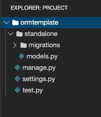

Estimated time needed: 20 minutes
PostgreSQL, also known as Postgres, is an open-source relational database management system and it is one of the main databases
Django uses.
If you are using the Theia environment hosted by Skills Network Labs, a pre-installed PostgreSQL instance is provided for you which can be started with one simple command line.
You can skip this step if you have already started it in previous labs.
Terminal > New Terminal and run:
ebnf
start_postgres
save the connection information such as generated username, password, and host, etc, which will be used to configure the
Django app to connect to this database.
pgsql
Starting your Postgres database....
This process can take up to a minute.
Postgres database started, waiting for all services to be ready....
Your Postgres database is now ready to use and available with username: postgres password: Nzg3Mi15bHVvLTIz
You can access your Postgres database via:
• The browser at: https://yluo-5050.theiadocker-1.proxy.cognitiveclass.ai
• CommandLine: psql --username=postgres --host=localhost
Psycopg as an interface to work with PostgreSQL, you can install it using the following command:
gcode
python3 -m pip install psycopg2-binary
Before starting the lab, make sure your current Theia directory is /home/project.
First, we need to install Django related packages if not installed previously.
cmake
python3 -m pip install Django
In this lab, instead of creating a complete Django web project and app using command-line utilities, you will be creating a simplified app with only ORM component from scratch.
Within the ORM-only app, you can define your models and easily perform CRUD operations on your model objects.
More importantly, you can create and run Python script files to do that
instead of typing Python code into shell line by line.
Let's start by creating an empty project folder
File > New Folder and type ormtemplate which acts as the container folderfor an empty Django project.
ormtemplate folder, and create a subfolder standalone which acts as the containerfolder for an empty Django app called standalone
ormtemplate folder again, and create an empty settings.py file and a manage.py file
Next, we will add the content to manage.py file acting as a command-line interface managing our Django
project
manage.py file, and copy and paste the following code snippet
python
import os
import sys
if __name__ == "__main__":
os.environ.setdefault("DJANGO_SETTINGS_MODULE", "settings")
try:
from django.core.management import execute_from_command_line
except ImportError:
try:
import django
except ImportError:
raise ImportError(
"Couldn't import Django. Are you sure it's installed and "
"available on your PYTHONPATH environment variable? Did you "
"forget to activate a virtual environment?"
)
raise
execute_from_command_line(sys.argv)
The code snippet be added to the manage.py file as the setting module of our ormtemplate project and be able
to execute Django built-in commands such as migrations.
Next, let's add a simple database settings to settings.py
settings.py, copy and paste the following code snippet
python
# PostgreSQL
DATABASES = {
'default': {
'ENGINE': 'django.db.backends.postgresql_psycopg2',
'NAME': 'postgres',
'USER': 'postgres',
'PASSWORD': 'Place with your password generated in Step 1',
'HOST': 'localhost',
'PORT': '5432',
}
}
INSTALLED_APPS = (
'standalone',
)
SECRET_KEY = 'SECRET KEY for this Django Project'
The above code snippet adds standalone app as an installed app and adds the default database
to be the pre-installed PostgreSQL we created in Step 1.
You just need to update the PASSWORD field to be the password generated in Step 1.
So far we have created a very simple Django project. Next let's add content to our standalone app.
ormtemplate/standalone folder and
create an empty models.py containing model definitions and a folder named migrations
containing migration scripts in standalone app.
After that, your app structure should look like the following:

standalone app is ready and you can start test if the standalone app is working.orm/models.py file and copy and paste the following code snippet to define a simple Test model
python
from django.db import models
# Test model
class Test(models.Model):
name = models.CharField(max_length=30)
Next, we can ask ormtemplate app to generate the Test table by running migration command-lines.
cd into ormtemplate folder
bash
cd ormtemplate
and now your current Theia folder should be /home/project/ormtemplate shown in the terminal
standalone app
vim
python3 manage.py makemigrations standalone
and you should see migration scripts generated for your Test model
awk
Migrations for 'standalone':
standalone/migrations/0001_initial.py
- Create model Test
Note, if you see errors like
django.db.utils.OperationalError: FATAL: password authentication failed for user "postgres"
please re-run start_postgres to reset the PostgreSQL server and use the new password in settings.py.
vim
python3 manage.py migrate
Next, you can write some Python testing code in a Python script file (*.py) to test your model.
Click the ormtemplate folder and create a new file called test.py
Open the empty test.py and add following code snippet to test your test model:
python
# Django specific settings
import inspect
import os
os.environ.setdefault("DJANGO_SETTINGS_MODULE", "settings")
from django.db import connection
# Ensure settings are read
from django.core.wsgi import get_wsgi_application
application = get_wsgi_application()
# Your application specific imports
from standalone.models import Test
# Delete all data
def clean_data():
Test.objects.all().delete()
# Test Django Model Setup
def test_setup():
try:
clean_data()
test = Test(name="name")
test.save()
# Check test table is not empty
assert Test.objects.count() > 0
print("Django Model setup completed.")
except AssertionError as exception:
print("Django Model setup failed with error: ")
raise(exception)
except:
print("Unexpected error")
test_setup()
The above code snippet first cleans the database and then inserts a test object. Then it checks if the test object was inserted correctly.
test.py:
vim
python3 test.py
and you should see
arduinoDjango Model setup completed.
Now you have successfully created a standalone Django ORM app and tested it with a simple Test
model. You also get yourself familiar with Django app structure by creating them from scratch.
Next, you could download and save this project locally as a template for your future learning and Django ORM development activities.
ormtemplate, and click Download to save your workspace.For your practice, you could import it to a new Theia environment or your local Python environment as a starting point to develop more complex Django ORM models.
In this lab, you have created a standalone Django ORM app without creating a full Django web project. You could use this simple ORM app as a template for you to learn Django ORM as well as build more complex Django ORM apps in the future.
| Date | Version | Changed by | Change Description |
|---|---|---|---|
| 30-Nov-2020 | 1.0 | Yan Luo | Initial version created |